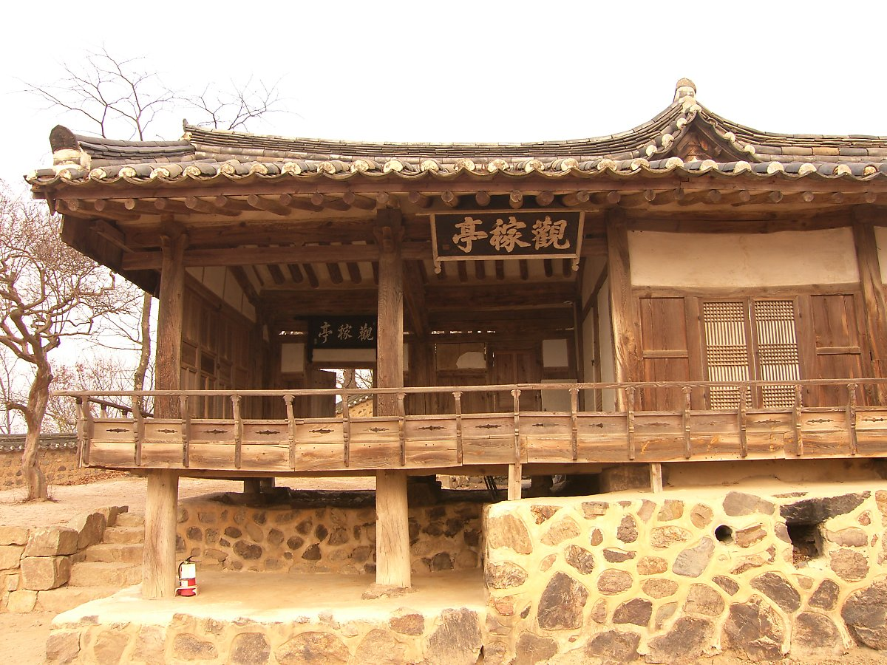

역사 속 한옥
한국건축은 중국건축과 다르다.
건축학회에서는 한국건축을 중국건축으로 분류한다. 그러나 한국건축의 역사를 들여다 보면 중국건축과 전혀 다르다. 특히 살림집은 중국의 살림집과 전혀 다르고 이 살림집이 우리 다른 전통건축 전체에 큰 영향을 주었다. 대게의 경우 권위건축이 발달하고 이것이 살림집의 발전으로 이어지기 때문이다. 이는 세계 건축의 역사에서 매우 특이한 현상으로 한옥이 서양건축과도 다르다는 걸 알 수 있다. 그외에도 한국건축은 세계 건축사에서 특별한 점이 여럿이 있다. 이를 몇 번에 나누어 적는다.
시대와 공간을 넘어서 건축의 역사는 지배계층의 역사다.
건축에는 많은 시간이 소요되고, 비용도 많이 치이고, 인력이 많이 동원되기 때문이다. 건축의 역사가 지배계층의 역사라는 사실은 보편적이라고 할 수 있다. 그런데 예외가 있는데 그게 우리나라의 한옥이다. 이미 앞에서 본 것처럼 한옥이 한옥인 이유는 거기에 구들이 장착되어 있어서다. 그런데 이 구들을 발명한 것이 그 당시 민중인 백성이다. 그래서 우리나라 건축발전에서 백성의 기여도를 함부로 얕잡아 봐서는 안 된다. 한옥이 지금의 형태로 발달하기까지 두 개의 경로를 따라 발전하며 합해져 발전하는데, 하나는 구들이고 다른 하나는 나무뼈대다. 구들이 바닥난방이라는 형태로 주로 백성에 의해 발전되었다면, 나무뼈대는 동양 삼국에서 귀족을 중심으로 발달했다. 그런데 앞에서 본 것처럼 한옥을 한옥이게 하는 건 구들이다.

‘친하거나 소원함에 구애받지 않고 같은 냇물에 들어가 목욕을 하거나 같은 방에서 잠을 잔다.’
중국 남북조 시대에 쓰인 주서(周書)의 고구려조의 기록이다. 생각해보면 최근까지 우리가 살던 모습이다. 좌식생활이기 때문에 가능한 이야기다. 추운 고구려에서 좌식생활을 하려면 구들이 필수적이었고, 이게 고구려의 보편적 현상이었던 것으로 보인다.
5세기 후반 온달의 집에 들어가지 못한 평강공주가 시문(柴門) 아래서 잠을 잤다고 하는데 여기서 시문을 사립문 정도로 해석할 수 있으므로 마당이 당시에 일반적이었다는 것을 알 수 있다. 바보 온달이니 가난한 양민의 집이라고 할 수 있을 것이다. 그리하여 구들과 마당을 장착한 한옥이 탄생하는데 주도적 역할을 한 것은 오히려 백성이라고 할 수 있다. 그러나 귀족 역시 아래 사진처럼 발달된 나무뼈대를 발달시켰다는 점에서 지배계급의 역할 역시 폄훼해선 안 된다.
웹의 시원 : http://info.cern.ch - home of the first website
☞ 맨 위로 가시려면 누르세요